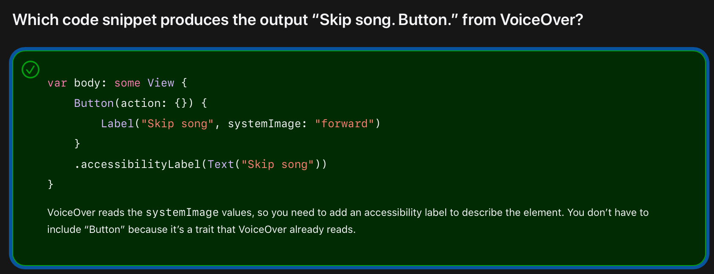
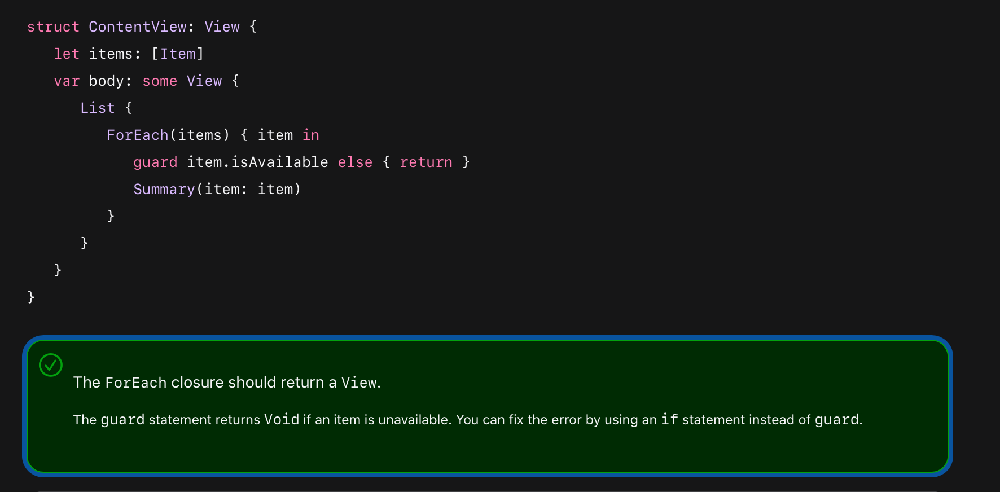

iOS App Dev Tutorials를 참고했다. 애플 홈페이지에서는 못찾았는데 uikit tutorial이라고 구글에 검색하니 떴다.
Swift에서 클로저를 많이 쓸테니 잘 보라는 말이 인상깊다.
SwiftUI is a declarative framework for building apps for any Apple platform.
선언적 프로그래밍이 뭐지?
In computer science, declarative programming is a programming paradigm—a style of building the structure and elements of computer programs—that expresses the logic of a computation without describing its control flow.
You build a complex view by composing it of small, simple views. Stacks group views horizontally, vertically, or back to front. The system treats SFSymbols like fonts, so they scale dynamically with a user’s device settings. Some systems use left and right alignment. SwiftUI uses leading and trailing alignment to ease the localization of your app. To customize a SwiftUI view, you call methods known as modifiers. Each modifier returns a new view. You can use multiple modifiers on a single view. To chain modifiers, stack them vertically. strokeBorder modifier 해석이 안된다 ㅋㅋㅋ accessibility label은 왜 text를 패러미터로 받지?
Button(action: {}) {
Image(systemName: "forward.fill")
}
.accessibilityLabel(Text("Next speaker"))
VoiceOver reads the label “Next speaker,” followed by the inherent accessibility trait “Button.”

The DailyScrum model will contain the following four properties, all with simple value types: title, attendees, lengthInMinutes, and color. Because DailyScrum will primarily carry value data, you’ll make it a value type by declaring it as a struct.
오홍 모델을 이렇게 만드는구나.
왜 테스트 데이터를 computed property으로 선언했을까? When should you use a computed property or a stored property? 자주 사용하지 않는 값이어서 그런듯,,,? static인건 struct 타입에 속하는건 맞으니까,,?
.previewLayout(.fixed(width: 400, height: 60)) 이건 잘 안써봤네!
오 샘플 코드에 배경 따라 텍스트 색 선택하는 코드가 있네. 유용할듯!
VStack은 다음과 같이 선언되어있다.
@available(iOS 13.0, macOS 10.15, tvOS 13.0, watchOS 6.0, *)
@frozen public struct VStack<Content> : View where Content : View {
/// Creates an instance with the given spacing and horizontal alignment.
///
/// - Parameters:
/// - alignment: The guide for aligning the subviews in this stack. This
/// guide has the same vertical screen coordinate for every child view.
/// - spacing: The distance between adjacent subviews, or `nil` if you
/// want the stack to choose a default distance for each pair of
/// subviews.
/// - content: A view builder that creates the content of this stack.
@inlinable public init(alignment: HorizontalAlignment = .center, spacing: CGFloat? = nil, @ViewBuilder content: () -> Content)
/// The type of view representing the body of this view.
///
/// When you create a custom view, Swift infers this type from your
/// implementation of the required ``View/body-swift.property`` property.
public typealias Body = Never
}
resultBuilder는 또 뭐지? 링크도 나중에 정리해보자.
SF Symbols used in labels and images scale and align appropriately with changes in font weight and size.
The List initializer in this step accepts a ViewBuilder as its only parameter. So, you can add rows with the same syntax you’ve been using with other container views such as HStack and VStack.
List에 대한 문서 읽어보기. 거기에 init에 대해서도 나와있음. Never 키워드는 뭐였더라,,,?
What is the difference between List and ForEach in SwiftUI?
You create a SwiftUI app by declaring a structure that conforms to the App protocol. The app’s body property returns a Scene that contains a view hierarchy representing the primary user interface for the app.
WindowGroup is one of the primitive scenes that SwiftUI provides. On iOS, the views you add to the WindowGroup scene builder are presented in a window that fills the device’s entire screen.
 viewbuilder는 return이 필요없는듯.
push the timer view to the top of the navigation stack. 스택으로 작동하는 것 같은데, 이것도 알아보자.
Notice that you add the .navigationTitle modifier to the List. The child view can affect the appearance of the NavigationView using modifiers.
그나저나 스크럼에 대해서도 찾아보자
navigationBarItems(leading:trailing:). Deprecated. Use toolbar(content:) with navigationBarLeading or navigationBarTrailing placement.
.toolbar {
ToolbarItem(placement: .navigationBarTrailing) {
Button(action: {}) {
Image(systemName: "plus")
}
}
}
The compiler error is resolved with the update to the call. 콜이 업데이트됐다는게 뭘까?
Sections create visual distinctions within your list. They help you to chunk content and establish groups in the information hierarchy of the list view.
왜 list style에는 built-in static var이 있고 타입도 있을까? How to change ListStyle in List
SwiftUI automatically includes the animations when pushing and popping from the navigation stack.
NavigationView is a container view that presents a stack of views in a navigation hierarchy.
Navigation modifiers, such as title and bar items, are added to child views and propagated to the parent NavigationView.
As the user edits, the view stores the scrum values in a Data property. If the user confirms the change, the view updates DailyScrum using the contents of Data.
이런 방법으로 수정/적용할 수도 있구나~!
SwiftUI observes @State properties and automatically redraws the view’s body when the property changes. This behavior ensures the UI stays up to date as the user manipulates the onscreen controls.
Each piece of data that you use in your view hierarchy should have a single source of truth. You can use the @State property wrapper to define the source of truth for value types.
Declare @State properties as private so they can be accessed only within the view in which you define them.
TextField takes a binding to a String. A binding is a reference to a state that is owned by another view.
Slider(value: $scrumData.lengthInMinutes, in: 5...30, step: 1.0) {
Text("Length")
}
The Text view won’t appear on screen, but VoiceOver uses it to identify the purpose of the slider.
ColorPicker("Color", selection: $scrumData.color)
.accessibilityValue(Text("Color picker"))
The color picker has the “button” accessibility trait, so don’t include the word “button” in the label.
fullScreenCover 속 버튼이 뷰의 state를 건들이는데 왜 escaping closure가 아닌지 궁금했다. outlive가 아니라서 그런듯??
The method remove(atOffsets:) uses the IndexSet to remove elements from the array.
You should maintain a single source of truth for every piece of data in your app and use bindings to share a reference to that source of truth. The edit screen should act on data that the detail screen owns, instead of creating a new source of truth.
You can use the constant(_:) type method to create a binding to a hard-coded, immutable value. Constant bindings are useful in previews or when you’re prototyping your app’s UI.
그.. 여기 방식이 좋은건가? edit이랑 상관없는 뷰에 순전히 edit을 위한 변수가 있는게 맞는걸까?? 그리고 이럴거면 왜 binding을 해 그냥 값으로 넘겨줘도 되지. 아 굳이 edit에 모델을 통으로 넣지 않기 위해 이러는건가?!?! edit 뷰를 부모 뷰에서 많이 정의하는 것이 인상깊다.
Button("Edit") {
isPresented = true
data = scrum.data
}
이게 되는거보면 순서는 클로저 내에서 상관없는듯??
private func binding(for scrum: DailyScrum) -> Binding<DailyScrum> {
guard let scrumIndex = scrums.firstIndex(where: { $0.id == scrum.id }) else {
fatalError("Can't find scrum in array")
}
return $scrums[scrumIndex]
}
이런걸 만들어쓰네,,,! Using the utility method to create the binding keeps the DetailView initializer concise.
binding에 대해서. 달러 표시는 왜 나오는걸까? 애플 공식 문서에 따르면
Applying the $ prefix to a property wrapped value returns its projectedValue, which for a state property wrapper returns a binding to the value.
projectedValue란 A binding to the state value.
In addition to the wrapped value, a property wrapper can expose additional functionality by defining a projected value—for example, a property wrapper that manages access to a database can expose a flushDatabaseConnection() method on its projected value. The name of the projected value is the same as the wrapped value, except it begins with a dollar sign ($). Because your code can’t define properties that start with $ the projected value never interferes with properties you define.
@State가 아니면 Cannot find '$scrums' in scope이라고 뜸. projectedValue가 없어서 그럴까?
struct Book {
var title: String
var identifier: Int
}
@State private var book = Book(title: "The Adventures of Smudge", identifier: 19237)
// $book.identifier는 Binding<Int>
ZStack overlays views back to front
.previewLayout(.sizeThatFits)
private var minutesRemaining: Int {
secondsRemaining / 60
}
private var minutesRemainingMetric: String {
minutesRemaining == 1 ? "minute" : "minutes"
}
아니 이러면 1분 미만이면 어떡하게???
struct ScrumProgressViewStyle: ProgressViewStyle {
var scrumColor: Color
func makeBody(configuration: Configuration) -> some View {
ZStack {
RoundedRectangle(cornerRadius: 10.0)
.fill(scrumColor.accessibleFontColor)
.frame(height: 20.0)
ProgressView(configuration)
.frame(height: 12.0)
.padding(.horizontal)
}
}
}
오 스타일을 이렇게 만드는구나.
You’ve used @State to create a source of truth for value type models. You can use @StateObject to create a source of truth for reference type models that conform to the ObservableObject protocol.
ObservedObject의 문제점이 뭐였더라,,, 링크
timer = Timer.scheduledTimer(withTimeInterval: frequency, repeats: true) { [weak self] timer in
if let self = self, let startDate = self.startDate {
let secondsElapsed = Date().timeIntervalSince1970 - startDate.timeIntervalSince1970
self.update(secondsElapsed: Int(secondsElapsed))
}
}
왜 weak self를 썼는지도 알아보자,,, 클로저도 공부하기!!
SwiftUI provides life cycle methods to trigger events when a view appears and disappears.
The timer stops each time an instance of MeetingView leaves the screen, indicating that a meeting has ended.
오 dropLast 메소드 기억해두기!
타이머에서 스킵이 즉 scrumTimer에서의 스킵이지만 논리 분리?를 위해 패러미터로 따로 받는 것 인상깊음.
In this tutorial, you’ll update Scrumdinger to support persistence, an essential feature of most apps. You’ll add Codable conformance for the app’s models and write methods to load and save scrums.
Codable is a type alias that combines the Encodable and Decodable protocols. When you implement these protocols on your types, you can use the Codable API to easily serialize data to and from JSON.
Color 구조체 Codable하게 만드는 코드가 있음!
An ObservableObject includes an objectWillChange publisher that emits when one of its @Published properties is about to change. Any view observing an instance of ScrumData will re-render when the scrums value changes. Observe라는게 특별한 뜻이 또 있는거 아닐까?!
Dispatch queues are first in, first out (FIFO) queues to which your application can submit tasks. Background tasks have the lowest priority of all tasks.
Self vs self
FileManager, DispatchQueue... JSONDecoder...
import Foundation
class ScrumData: ObservableObject {
private static var documentsFolder: URL {
do {
return try FileManager.default.url(for: .documentDirectory,
in: .userDomainMask,
appropriateFor: nil,
create: false)
} catch {
fatalError("Can't find documents directory.")
}
}
private static var fileURL: URL {
return documentsFolder.appendingPathComponent("scrums.data")
}
@Published var scrums: [DailyScrum] = []
func load() {
DispatchQueue.global(qos: .background).async { [weak self] in
guard let data = try? Data(contentsOf: Self.fileURL) else {
#if DEBUG
DispatchQueue.main.async {
self?.scrums = DailyScrum.data
}
#endif
return
}
guard let dailyScrums = try? JSONDecoder().decode([DailyScrum].self, from: data) else {
fatalError("Can't decode saved scrum data.")
}
DispatchQueue.main.async {
self?.scrums = dailyScrums
}
}
}
func save() {
DispatchQueue.global(qos: .background).async { [weak self] in
guard let scrums = self?.scrums else { fatalError("Self out of scope") }
guard let data = try? JSONEncoder().encode(scrums) else { fatalError("Error encoding data") }
do {
let outfile = Self.fileURL
try data.write(to: outfile)
} catch {
fatalError("Can't write to file")
}
}
}
}
여기 분석할 것들이 한가득
In ScrumsView.swift, add an @Environment property for the scenePhase value. You’ll observe this value and save user data when it becomes inactive.